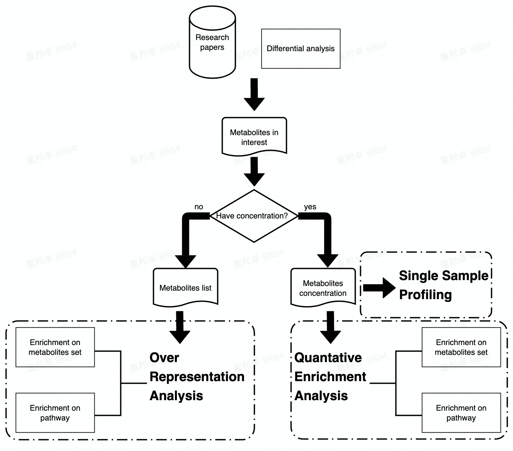

Data Analysis in Metabolomics
2022-08-16
Chapter 1 Introduction
1.1 What is metabolomics?
Metabolomics is the large-scale study of small molecules, commonly known as metabolites, within cells, biofluids, tissues or organisms. Collectively, these small molecules and their interactions within a biological system are known as the metabolome.
Figure 1.1: Overview of the four major omics fields, from genomics to metabolomics
Just as genomics is the study of DNA and genetic information within a cell, and transcriptomics is the study of RNA and differences in mRNA expression; metabolomics is the study of substrates and products of metabolism, which are influenced by both genetic and environmental factors.
Metabolomics is a powerful approach because metabolites and their concentrations, unlike other “omics” measures, directly reflect the underlying biochemical activity and state of cells / tissues. Thus metabolomics best represents the molecular phenotype.
1.2 What are the procedures in this template?
Figure 1.2: Workflow in Data Analysis on metabolomics
1.2.1 Statistical Analysis
Due to terrible experience on Statistical Analysis in Metabolomics via MetaboAnalystR R package, we try to provide a reproducible and easy-to-use template for visualization, pre-processing, exploration, and statistical analysis on metabolomic data by other packages and scripts. Here, the template comprises the following procedures:
Data Processing
Data Checking
Data Filtering
Missing Value Imputation
Data Normalization
Cluster Analysis
Hierarchical Clustering
Partitional Clustering
Chemometrics Analysis
Principal Component Analysis (PCA)
Partial Least Squares-Discriminant Analysis (PLS-DA)
Sparse Partial Least Squares-Discriminant Analysis (sPLS-DA)
Univariate Analysis
Fold Change Analysis
T Tests
Wilcoxon Test
Limma Test
Wilcoxon Test
Volcano plot
Correlation Heatmaps
glasso
Feature selection
Lasso
Ridge
Elasticnet
Classification
- Random Forest
Network Analysis
SPRING
Spearman
SparCC
Network comparison
1.2.2 Functional Analysis
Following two chapters would focus on the Enrichment Analysis and Pathway Analysis of metabolomic data. Enrichment Analysis includes three sections (i.e., ORA, SSP and QEA) and Pathway Analysis only includes ORA and QEA.
The main difference between Enrichment Analysis and Pathway Analysis are the data set that input metabolites are enriched to. In Enrichment Analysis, input metabolites are enriched to pre-defined metabolite sets while in Pathway Analysis, metabolites are enriched to pathways in KEGG.
Enrichment Analysis
Single Sample Profiling
Over representation analysis
Quantitative Enrichment Analysis
Pathway Analysis
Over representation analysis
Quantitative Enrichment Analysis
Workflow of Enrichment analysis and Pathway analysis is attached below. Users can choose analysis module according to their data type or interest.

1.3 Software
R 4.1.2 or later release Download link.
Rstudio Desktop Download link.